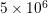
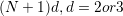

The largest simulations performed so far with Nek5000 are in the range of . Performance aspects to keep in mind
In such context it is recommendable to save the .rea file as a binary re2.
Also for input/output it may be necessary to use MPI I/O. In this case the code has to be compiled with MPI I/O, i.e. the line PPLIST="MPIIO" in the makefile should not be commented. For output we may use iofiles, the parameter 65 in the .rea file specifies the number of directories and separate files that have to be created as specified by the user.
For large scale simulations the AMG solver is a better, faster choice for solving the Poisson problem (the default solver is XXT).
AMG solver The code should be compiled once with the settings AMG=true, AMG_ DUMP=true. In the tools folder of Nek5000 we can find the AMG solver, a Matlab version for the moment which is subject to further integration in the main code. The user should run the script run which will read the AMG dump files and create new ones. The new files are now to be used in the code and with AMG_ DUMP commented out the user should recompile and run his Nek5000 version. The AMG solver is a 3 stage process.
The first step will generate the files needed for the matlab code. Next matlab must run the setup code and generate a set of .dat files. Then nek can run with the .dat files and use the AMG pressure solver.
AMG dump stage
Make sure IFAMG and IFAMG_ DUMP in makenek are uncommented and set to true Run makenek clean, then makenek <casename> Run Nek (this will produce a set of *.dat files)
MATLAB AMG stage
Move the amgdmp_ *.dat files to nek5_ svn/trunk/tools/amg_ matlab:
mv amgdmp*.dat ../../trunk/tools/amg_ matlab
cd ../../trunk/tools/amg_ matlab
Run the script: tools/amg_ matlab/run (this may take several hours and will produce set of files)
AMG run stage
Move all *.dat files produced back to your case directory:
mv *.dat /path/to/case/dir
Comment IFAMG_ DUMP in makenek (IFAMG should still be set to TRUE) Run makenek clean, then run makenek <casename> Run Nek (the generated AMG files will be read during the AMG setup phase)
Notes on improving AMG results:
To help speed up the matlab process, try running the 1st stage, the AMG dump stage, with lx1=3 in the SIZE file. Using a lower lx1 number will create a sparser matrix and thus a speedier matlab resolution. lx1 can be increased when ready to run the 2nd stage, the AMG run stage, after the .dat files are produced.
To increase accuracy in the AMG results, try tightening the tolerances in the run script, in trunk/tools/amg_ matlab. Specifically, the first tolerance (default set to 0.5). Lowering this (say, to 0.1), will increase the time the matlab code stage takes, but the result will be a faster convergence in the pressure solves of the AMG run stage.
Size related issues Large simulations require a high number of nodes and thus a high number of variables. So far Nek5000 supports by default 4 byte integers, however the node numbering for big meshes may exceed this size and 8 byte integers may be needed. How is this done?
If more than 9 passive scalars are needed
Exiting Nek5000 while a batch job in being executed should be done not using "qdel" but echo -1 > ioinfo.
MAKENEK The shell script makenek is designed to assist the compilation process of NEK5000. The script will create a makefile based on the user settings section in makenek. The GNU gmake utility is used to build NEK5000. Available configurations options:
| name | values | default | description |
| PPLIST | string | list of pre-processor symbols (BG,MOAB,BLAS_ MXM, MPIIO) |
|
| IFMPI | true,false | true | use MPI (needed for a multiprocessor computation) |
| IFAMG_ DUMP | true,false | false | dump AMG pre-processing files |
| IFAMG | true,false | false | use AMG as coarse grid solver for pressure preconditioner else XXT |
| F77 | string | mandatory | Fortran compiler (e.g. MPI: mpif77) |
| CC | string | mandatory | C compiler (e.g. MPI: mpicc) |
| G | string | optional | optional compilation flags |
| OPT_ FLAGS_ STD7 | string | optional | optimization flags for L1,L2,L3 |
| OPT_ FLAGS_ MAG | string | optional | optimization flags for L4 (highest opt level) |
| SOURCE_ ROOT | string | mandatory | path of nek5000 source |
| USR | string | optional | object list of additional files to compile (make intructions (makefile_ usr.inc required) |
| USR_ LFLAGS | string | optional | optional linking flags |
| MOAB_ DIR | string | NEK with MOAB | Path to MOAB directories |
| IFVISIT | true,false | false | Toggles Visit in situ. See Visit_ in_ situ for details |
| VISIT_ INSTALL | string | VISIT in situ | Path to VISIT install path. See Visit_ in_ situ for details. |
| VISIT_ STOP | true,false | false | When running VISIT in situ, simulation stops after step 1 to connect VISIT. |
Binary geometry Reatore2 Jump to: navigation, search The NEK5000 tool, reatore2 allows users to split an ASCII .rea file to an ASCII .rea and a binary .re2 file. The .re2 file contains the mesh and boundary condition data that is normally written in ASCII in the .rea file. For large simulations, this information can be substantial, so storing it in binary lowers the memory footprint for the simulation. Running reatore2
Be sure that your nekton tools are up-to-date and compiled. At the command prompt type: reatore2
NOTE-If the executables for the tools were not placed in the bin directory(default), include the path to the reatore2 executable
User is prompted for name of .rea file
-Enter the name to the .rea file, excluding the .rea extenstion
User is prompted for the new files name
-Enter the name for your new files
The parallelism of Nek5000 is accomplished via domain decomposition methods and a suitable gather-scatter code. All this is implemented in such way that the user does not have to be concerned with the parallelism and only focus on the actual solvers while keepin in mind a few simple rules and routines that switch from local to global and back.
For the most part, the global element numbering is not relevant since Nek5000 assigns it randomly but following certain rules.
There are two types of array sizes, starting with lx1, lelv, etc. which give an upper bound of the arrays. And nx1, nelv, etc. which give the actual number of elements/grid points per processors. For the example in Fig. 5.1 we have
Arrays lglel that distinguish which processor has which elements,
Now for global to local we have two common arrays (scaling as nelgt, but only two such arrays)
All data contiguously packed (and quad-aligned) real u(lx1,ly1,lz1,lelt) indicates that u is a collection of elements, e=1,,Nelt =< lelt, each of size .
Example: Summation
Serial version s = 0
do e=1,nelv
do iz=1,nz1
do iy=1,ny1
do ix=1,nx1
s=s+u(ix,iy,iz,e)
enddo,,enddo
Second approach, serial version (works in parallel in Nek) n=nx1*ny1*nz1*nelv
s=0
do i=1,n
s=s+u(i,1,1,1)
enddo
Nek Parallel Version
s=glsum(s,n)
If you want a local max s=vlmax(u,n), or a global max s=glmax(u,n).